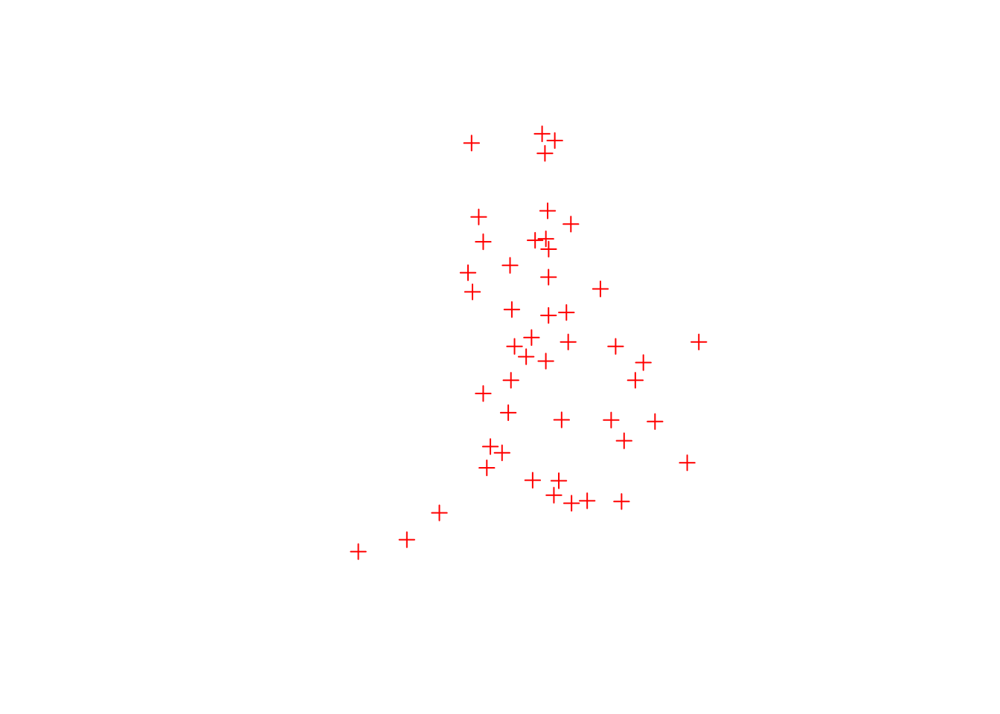
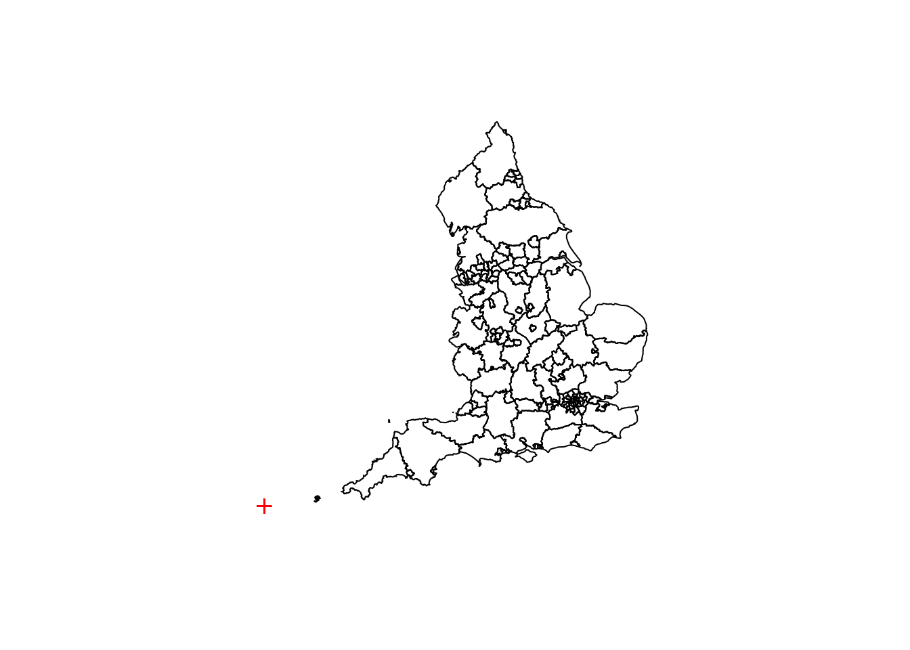
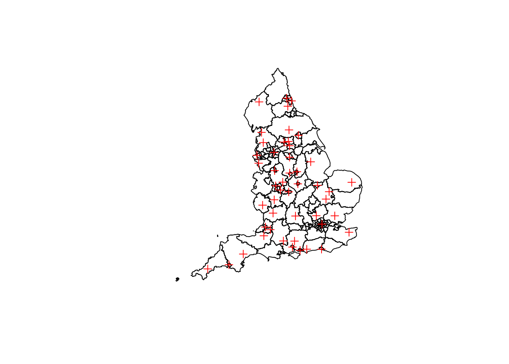
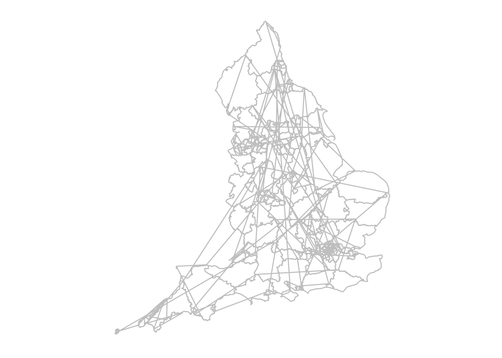
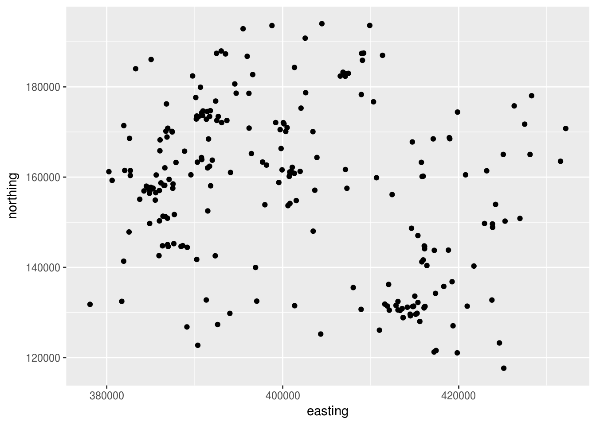
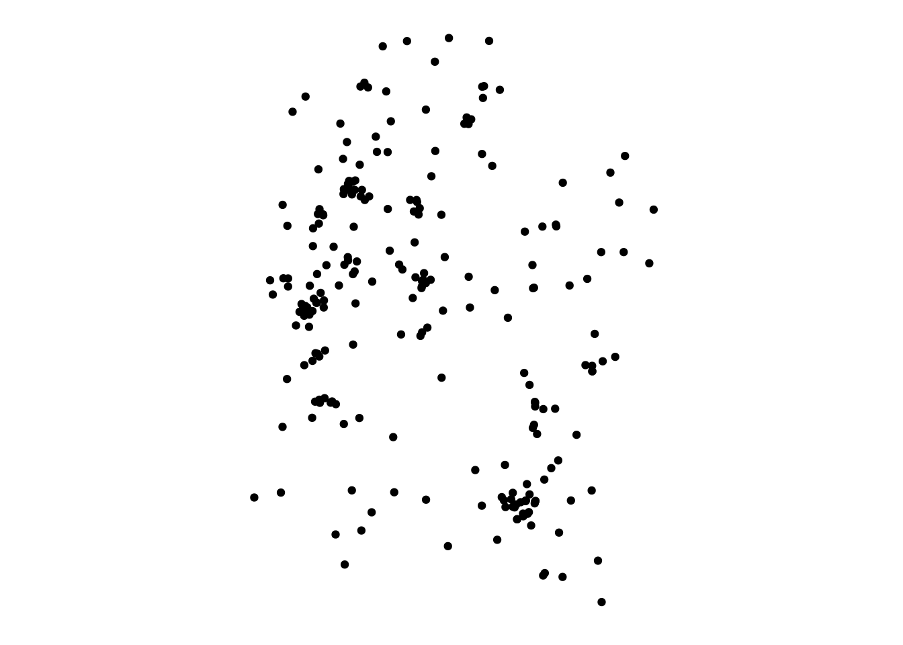
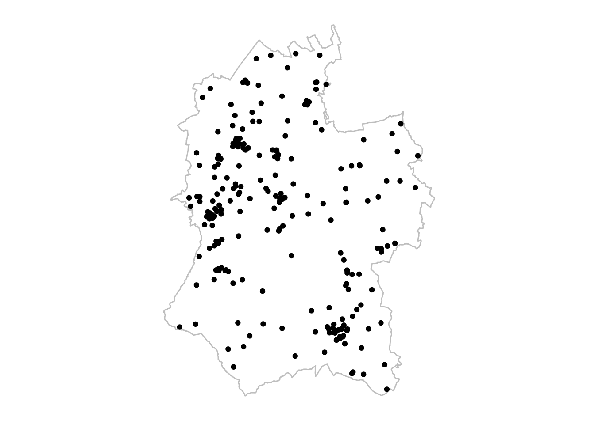
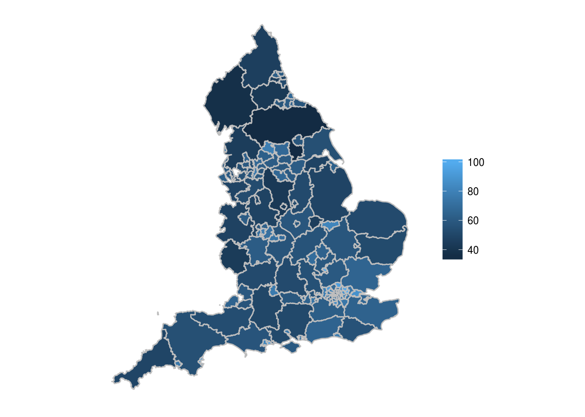
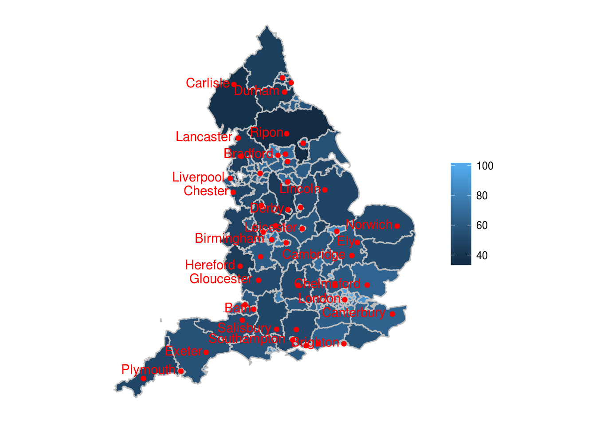

Chapter 10 Maps
Maps in R are best plotted using ggplot - which is good, because we already know how to use that! However, the new thing about maps is the sort of data we’ll be using - as well as having data about certain variables, this data has a location attached to it too.
First, we need to load in the packages we need. We’ll need the following packages:
- tidyverse, as this contains ggplot2 for plotting and dplyr for data manipulation
- rgdal, a package for loading in spatial data
- broom, a package for converting spatial data into dataframes to be plotted in ggplot2
Activity A11.1:
- Install rgdal
- Install broom
- Use library() to load tidyverse, rgdal, and broom
10.1 Loading in geospatial data
Geospatial data comes in three forms:
- Polygons (shapes)
- Lines
- Points
Polygons and points are the most common (geospatial line data only really features when relating to travel infrastructure or people movements), so we’ll focus on these two.
Point, polygon, and line data can come in a number of different data formats, but the msot common is a ‘shapefile’ with a .shp suffix. We can use the rgdal library to load in shapefiles. Firstly, we’re going to load the names of location of major UK cities using the readOGR function.
Make sure you have the shapefiles located in a folder called shps within your data folder first.
## OGR data source with driver: ESRI Shapefile
## Source: "/home/travis/build/dfe-analytical-services/r-training-course/data/SHPs/england_cities.shp", layer: "england_cities"
## with 48 features
## It has 2 fieldsPlotted, the cities look like this:

…which looks vaguely like the UK!
You’ll see cities is a SpatialPointsDataFrame class object. The essentially means it’s a dataframe with spatial data attached.
Activity A11.2: Click the blue circle to the left of cities to open up the object. You’ll see there’s an attribute within cities called data, and another attribute called coords.
Access these by typing cities@ and then whichever of the attributes you want to view.
We can also use readOGR to load in polygon data. The file we’re going to use is one containing the boundaries of Local Authorities (LAs) in England, called England_LA_2016.shp.
## OGR data source with driver: ESRI Shapefile
## Source: "/home/travis/build/dfe-analytical-services/r-training-course/data/SHPs/England_LA_2016.shp", layer: "England_LA_2016"
## with 152 features
## It has 8 fieldsThis is a SpatialPolygonsDataFrame, which makes sense!
However, if we plot the LAs alongside the cities, the don’t match up.

## integer(0)What we have here is all of the city points plotted down in the bottom lefthand corner (although you can only see one) over the LA map. This is because the cities data and the LA data use different ‘coordinate systems’.
10.2 Coordinate systems
At their most basic level, coordinates are just numbers that represent a location, where all the points within that set follow the same form. With that in mind, we can use different sets of numbers, or systems, to represent the location of a point. There are a lot of coordinate systems that are used in mapping, but the most common that you’ll come across when mapping UK data are:
- WGS84 (EPSG4326): This is the standard Latitude and Longitude coordinate system to map global data, developed in 1984. It makes the assumption that the earth is a perfect sphere (it’s actually a bit elliptical - wider at the sides), and Longitude (on the x axis) goes between -180 and 180 (degrees), with 0 being the Meridian Line in Greenwich, London. Latitude (on the y axis) again goes between -180 and 180, with 0 on the Equator.
- OSGB36 (EPSG27700): This is a grid system, with units in metres, specific to the UK. It’s origin is about 100km west of Lands End, roughly level with the most southerly point of the mainland Britain, Lizard Point. It assumes that the British Isles are on a completely flat plane (which of course they aren’t). On the x axis are Eastings and on the y axis are Northings. The largest coordinate value is (800000,1300000).
Tip: The EPSG codes are codees from the now defunct European Petroleum Survey Group, and are a common code for different coordinate systems. These are the codes that we’ll use to change the coordinate systems. For more information on codes click here.
Let’s check which coordinate systems cities and england are on.
## CRS arguments:
## +proj=longlat +datum=WGS84 +no_defs +ellps=WGS84 +towgs84=0,0,0So, cities is on WGS84 - we can see from its datum (origin) attribute.
## CRS arguments:
## +proj=tmerc +lat_0=49 +lon_0=-2 +k=0.9996012717 +x_0=400000
## +y_0=-100000 +datum=OSGB36 +units=m +no_defs +ellps=airy
## +towgs84=446.448,-125.157,542.060,0.1502,0.2470,0.8421,-20.4894So, england is on OSGB36 - again we can see from its datum attribute.
Therefore, we need to translate one of the coordinate systems into the other. We’re going to convert cities into the OSGB36 coordinate system, because it’s a bit more of an intuitive system to use, using a grid in metres instead of degrees.
Let’s break this down:
- cities is our object name, and the first ingredient in our ‘recipe’ using pipes. We’re essentially updating cities.
- spTransform is a function for transforming spatial objects’ coordinate systems
- CRS stands for ‘Coordinate Reference System’ - this takes an argument which is a string containing the EPSG code of the coordinate system we want to convert to, which in this instance is EPSG27700
Activity A11.1: After you’ve run the code above, recheck which coordinate system cities is on.
Now if we replot cities and england, we’ll see they line up more as we’d expect.

## integer(0)10.3 Transforming mapping data
As mentioned, we’re going to be using ggplot to plot the maps. However, ggplot takes dataframes, and currently we have spatial dataframes, so that’s not going to fly.
What we need to do is convert our spatial dataframes into normal dataframes. There are two methods for this:
- For point data we can just convert it straight to a normal dataframe, and select the coordinates and any other required columns (e.g. labels)
- For polygon data we need to use a broom function called tidy, which breaks a polygon up into a series of lines, and creates a dataframe where each row is a coordinate of the start of one line and the stop of another, as well as a column detailing which group (in this instance a Local Authority) it’s part of
Let’s deal with the point data first.
cities_df <- cities %>% #Create a dataframe (df) version of cities
data.frame() %>%
select(city=City,
easting = coords.x1,
northing = coords.x2)Which creates something that looks like this:
## city easting northing
## 1 Bath 374654.4 164546.7
## 2 Birmingham 405758.2 285421.0
## 3 Bradford 416570.4 431915.0
## 4 Brighton 531128.8 104856.1
## 5 Bristol 359560.8 172496.5
## 6 Cambridge 544754.9 257863.3Activity A11.2: We need to do a bit of cleaning on this dataframe. Select only three columns, rename coords.x1 as easting and coords.x2 as northing.
With a polygon object, we can’t just use the data.frame function, because unlike a point object, there are multiple coordinates associated with each item in the data slot. So this is where we’re going to use tidy.
england_df <- england %>%
tidy() %>%
as.tbl() #We need this function to explicitly specify that that output is a dataframeWhich leaves us with something that looks like this:
## # A tibble: 6 x 7
## long lat order hole piece group id
## <dbl> <dbl> <int> <lgl> <fct> <fct> <chr>
## 1 447097. 537152. 1 FALSE 1 0.1 0
## 2 447229. 537033. 2 FALSE 1 0.1 0
## 3 447281. 537120. 3 FALSE 1 0.1 0
## 4 447378. 537095. 4 FALSE 1 0.1 0
## 5 447455. 537024. 5 FALSE 1 0.1 0
## 6 447551. 537078. 6 FALSE 1 0.1 0There are a few things to notice about this dataframe:
- The tidy function, when applied to spatial objects, automatically names the coordinate columns long and lat. In this instance long is actually easting and lat is actually northing - we’ll change the names in a minute.
- There are three defunct columns for our purposes: order, hole, and piece
- There’s no identifier for a Local Authority (name or code), which is present in the data slot of england. This has been replaced by the id column - each polygon’s points are identified by a unique number in that column.
- When we plot this data, ggplot2 will initially plot each of these polygons as one continuous line. This means that if one polygon does not start (indicated by the order column) at different coordinates to where the previous polygon finished, then a straight line across a polygon will appear (like the example below), connecting the two points. The group column prevents this from happening by not linking polygons in different groups.
ggplot()+
geom_polygon(data=england_df,
aes(long,lat),
col="grey",
fill=NA) +
coord_equal() +
theme_minimal() +
theme(axis.line=element_blank(),
axis.text.x=element_blank(),
axis.text.y=element_blank(),
axis.ticks=element_blank(),
axis.title.x=element_blank(),
axis.title.y=element_blank(),
panel.background=element_blank(),
panel.border=element_blank(),
panel.grid.major=element_blank(),
panel.grid.minor=element_blank(),
plot.background=element_blank(),
legend.title=element_blank())
So, we need to create another dataframe which has all the data from england as well as an id column, to match to the dataframe that we’ve just created.
england_data <- england@data %>%
cbind(england_df %>% select(id) %>% unique()) #Here we're binding the unique values from the id column in england_df to the data slot from england - the order remains the same which is why we can just bind themThis dataframe looks like this:
## LA15CD LA15NM LA_Code RSC_Code
## 0 E06000001 Hartlepool 805 5
## 1 E06000002 Middlesbrough 806 5
## 2 E06000003 Redcar and Cleveland 807 5
## 3 E06000004 Stockton-on-Tees 808 5
## 4 E06000005 Darlington 841 5
## 5 E06000006 Halton 876 8
## RSC_Name Reg_Code RGN15CD RGN15NM id
## 0 North 9 E12000001 North East 0
## 1 North 9 E12000001 North East 1
## 2 North 9 E12000001 North East 2
## 3 North 9 E12000001 North East 3
## 4 North 9 E12000001 North East 4
## 5 Lancashire & West Yorkshire 8 E12000002 North West 5Activity A11.3: Match england_data into england_df, using id and an inner join. Keep the following columns using select: long (renaming it easting), lat (renaming it northing), LA15NM, LA15CD, and group.
10.4 Point maps
Point maps are useful where you want to show the location of entities with a single location, and attributes/values associated with that entity. In this example we’re going to map all schools within the Local Authority of Wiltshire, along with their phase and size.
First, we want to load in the data we’re going to be using. We’re going to load in the shapefile called wiltshire_schools and transform it in one fell swoop.
wiltshire_schools_df <- "data/shps/wiltshire_schools.shp" %>%
readOGR() %>%
data.frame() %>%
select(easting = coords.x1,
northing = coords.x2,
LAEst:P_FT_T)## OGR data source with driver: ESRI Shapefile
## Source: "/home/travis/build/dfe-analytical-services/r-training-course/data/shps/wiltshire_schools.shp", layer: "wiltshire_schools"
## with 231 features
## It has 53 fieldsWe can now finally plot some data!

So, we’ve plotted some data, but it doesn’t look overly map like. Let’s break down what we’ve written first, and then we’ll make it look more like a map:
- ggplot(): The standard function, but notice here it has no arguments. This is because ggplot2 also allows you to specify your data and aesthetics from within the type of plot you’re displaying. This is really useful when you’re plotting different types of graphs from different data sources on the same coordinate system.
- geom_point: We’ve seen this before with scatter plots - it’s the same thing applied to spatial point data.
- data=wiltshire_schools_df: This is the data we’re using, the quirk here is that when specifying data within the type of plot as opposed to from within ggplot we need to explicitly specify the name of the argument, with data=.
- aes(easting,northing): Standard aesthetics, plotting the Easting and Northing of each plot
Now let’s makr it look more like a map. The first thing we can do is make the coordinates an equal scale (currently the x-axis is more stretched than the y-axis), and get rid of the grey background, the grid lines, and then axis labels.
ggplot() +
geom_point(data=wiltshire_schools_df,aes(easting,northing)) +
coord_equal() +
theme(axis.line=element_blank(),
axis.text=element_blank(),
axis.ticks=element_blank(),
axis.title=element_blank(),
panel.background=element_blank(),
panel.border=element_blank(),
panel.grid.major=element_blank(),
panel.grid.minor=element_blank(),
plot.background=element_blank())
There’s a lot to specify in the theme function, but once you’ve written it once you can copy it again and again (or even write a function to make it more concise/robust!).
That’s looking more map-like! What would really help is the border of Wiltshire. To do that we need to get a subset of england_df which only contains coordinates which bound Wiltshire:
We can then add a polygon to our map:
ggplot() +
geom_polygon(data=wiltshire_df,aes(easting,northing),col="grey",fill=NA) +
geom_point(data=wiltshire_schools_df,aes(easting,northing)) +
coord_equal() +
theme(axis.line=element_blank(),
axis.text=element_blank(),
axis.ticks=element_blank(),
axis.title=element_blank(),
panel.background=element_blank(),
panel.border=element_blank(),
panel.grid.major=element_blank(),
panel.grid.minor=element_blank(),
plot.background=element_blank(),
legend.title = element_blank())
That’s more like it! Let’s break down what we’ve got:
- geom_polygon: This plots a polygon
- data=wiltshire_df,aes(easting,northing): We’ve seen this format before
- col=“grey”,fill=NA: We want a grey outline and no fill colour
Notice how we plot the polygon first - this is because ggplot2 builds up layers on top of each other, so we want the points on top of the polygon.
The final thing we need to do is add some attributes to the points. This uses the same arguments we’ve used in plotting graphs.
Activity A11.4: Use col= and size= in the aesthetics in geom_point to detail the phase of the school (column name Sch_P in wiltshire_schools_df) and the size of the school’s workforce (column name T_W_H in wiltshire_schools_df)
Tip: Add in legend.title = element_blank() to get rid of the legend title and legend.key = element_rect(fill=NA) to get rid of the grey backgrounds behind the legen - both just make it look a bit more professional!
10.5 Chloropleth maps
The other type of map that we’re going to look at are chloropleth maps. Chloropleth maps are maps of multiple polygons with each polygon filled in with a certain colour/hatching depending on a certain attribute/value.
A chloropleth map uses similar code to a point map. We’re going to plot a map which has the average total workforce for schools in each Local Authority on it.
However, the first thing we need to do is to attach data on the average school workforce for each Local Authority from swfc_16 to england_df.
## Warning: Column `LA15NM`/`LA_Name` joining factors with different levels,
## coercing to character vectorThis gives us a dataframe that looks like this:
## # A tibble: 6 x 6
## easting northing group LA15CD LA15NM ave_tot_workforce
## <dbl> <dbl> <fct> <fct> <chr> <dbl>
## 1 447097. 537152. 0.1 E06000001 Hartlepool 67.2
## 2 447229. 537033. 0.1 E06000001 Hartlepool 67.2
## 3 447281. 537120. 0.1 E06000001 Hartlepool 67.2
## 4 447378. 537095. 0.1 E06000001 Hartlepool 67.2
## 5 447455. 537024. 0.1 E06000001 Hartlepool 67.2
## 6 447551. 537078. 0.1 E06000001 Hartlepool 67.2We can plot a simple chloropleth:
ggplot()+
geom_polygon(data=england_df,
aes(easting,northing,group=group,fill=ave_tot_workforce),
col="grey") +
coord_equal() +
theme(axis.line=element_blank(),
axis.text=element_blank(),
axis.ticks=element_blank(),
axis.title=element_blank(),
panel.background=element_blank(),
panel.border=element_blank(),
panel.grid.major=element_blank(),
panel.grid.minor=element_blank(),
plot.background=element_blank(),
legend.title = element_blank()) The two key differences to a point map are:
- The use of the group argument, to remove lines across polygons to connect them all
- The use of the fill argument with the ave_tot_workforce, which fills each Local Authority polygon with a colour corresponding to its value
The key thing that our chloropleth map is currently missing is some sort of reference to actual locations. However, we’ve got our city point data which we can add in, along with text labels. We have to build this up in two stages, so the first thing we’ll add in are the points:
ggplot()+
geom_polygon(data=england_df,
aes(easting,northing,group=group,fill=ave_tot_workforce),
col="grey") +
geom_point(data=cities_df,
aes(easting,northing),
col="red") +
coord_equal() +
theme(axis.line=element_blank(),
axis.text=element_blank(),
axis.ticks=element_blank(),
axis.title=element_blank(),
panel.background=element_blank(),
panel.border=element_blank(),
panel.grid.major=element_blank(),
panel.grid.minor=element_blank(),
plot.background=element_blank(),
legend.title = element_blank())So we’ve plotted the location of the cities, using geom_point, which we’ve used before. To add the labels we need to use a new function however, called geom_text.
ggplot()+
geom_polygon(data=england_df,
aes(easting,northing,group=group,fill=ave_tot_workforce),
col="grey") +
geom_point(data=cities_df,
aes(easting,northing),
col="red") +
geom_text(data=cities_df,
aes(easting,northing,label=city),
check_overlap = TRUE,
col="red",
hjust = 1.1,
vjust=0.3) +
coord_equal() +
theme(axis.line=element_blank(),
axis.text=element_blank(),
axis.ticks=element_blank(),
axis.title=element_blank(),
panel.background=element_blank(),
panel.border=element_blank(),
panel.grid.major=element_blank(),
panel.grid.minor=element_blank(),
plot.background=element_blank(),
legend.title = element_blank())
Let’s break geom_text down:
- We’ve seen data= and the first two arguments of aes before
- label=city adds a text label of a certain value to the coordinates detailed in easting and northing
- check_overlap = TRUE checks if a each label overlaps with a previous label, and if it does, it won’t plot it. For example, ‘Bristol’ overlaps with ‘Bath’, so because Bristol comes after Bath, it isn’t plotted.
- col = “red” makes the text colour red
- hjust = 1.1 and vjust=0.3 make adjustments to the horizontal and vertical position of the label in relation to the point. This has been done so that the label doesn’t sit right on top of the point.
#R Markdown
We now know how to do a range of data analysis, as well as producing a lot of different visualisations. Now we need to know how to compile all of that into a report, and automatically produce that report. The has numerous benefits over the traditional Excel and Word approach to writing out analysis:
- Faster, once the template is written
- More robust - errors are less likely to occur, particuarly when copying from Excel to Word
- Can be updated immediately if/when data changes
There are two elements to R Markdown, the text (which has a number of ways of formatting it) and the code (which can be displayed and included in different ways). We’ll look at both of these, but first, we need to open an R Markdown file:
- Go to File
- Go to New File
- Click on R Markdown
- A new tab will open up in the script pane - have a look at it as it contains an example R Markdown template
- in the top right hand corner of the script pane click on the arrow next to Knit and click on ‘Knit to HTML’
- Save the R Markdown file in the ‘2_code’ folder
- The code will run and the output will pop up upon completion
- Compare this to the input file
- The output file will have saved in the ‘2_code’ folder - it shouldn’t output to here, but we’ll sort that later
This is how you generate an R Markdown document. When you make changes to it from now on, you won’t have to specify the name and save location every time you knit it.
Tip: HTML is the preferable output - it is more versatile in designs and can include interactive elements, however if you want to you can also output to Word, and if you have additional software installed (called LaTex and pronounced ‘lay-tec’) you can output straight to PDF.
10.6 Text
We can see from the template above that there are a range of ways of formatting text to render it to look good in a report.
First of all, headings. Headings are generated by sequential hashes - one hash is the largest heading, and six hashes is the smallest heading. These can be used to create a series of sub-headings in documents.
Heading 1
Heading 2
Heading 3
Heading 4
Activity A10.3: Add some headings and change the sizes of some of the headings in the template. Run the R Markdown document and see how they output.
Another useful formatting feature are lists. These can either be ‘ordered’ (1, 2, 3 or a, b, c) or ‘unordered’ (bullet points). The two examples below how to produce ordered and unordered lists, but there are three important things to remember with lists:
- There must be a clear line in between the end of the prose above the list and the list itself
- There must be a space between the character that denotes the list item and the prose
- There must be a clear line in between the end of the list and the prose below
An unordered list:
* Thing 1
* Thing 2
* Thing 3
An unordered list:
- Thing 1
- Thing 2
- Thing 3
An ordered list:
1. Thing 1
2. Thing 2
3. Thing 3
An ordered list:
- Thing 1
- Thing 2
- Thing 3
Activity A10.3: Add some headings and change the sizes of some of the headings in the template. Run the R Markdown document and see how they output.
The final formatting feature to demonstrate in this chapter are creating hyperlinks. To create the hyperlink, the text to be made a link is bound in square brackets, and the address of the link comes immediately afterwards bound by brackets:
A [link](http://www.yourlinkhere.com)
A link
Tip: There is loads more functionality in R Markdown for different formatting - just Google it!
10.7 Code
However, the text edits we can make to R Markdown documents are only half of the story - the beauty of it is that you can merge text and the outputs of code. So how do we include code?
Code in R Markdown is written in ‘chunks’. Chunks are written in the form below and appear in an R Markdown in a slightly grey section:
```{r}
print(’hello world)
```
Let’s break that down:
- 3 grave accents signify the start of the code chunk
- {} signify the metadata that goes with the chunk - more on this in a minute
- Inside the curly brackets, the r signifies the programming language we’re going to be writing in
- We’ve then got some code - as many lines as you want with whatever outputs you want
- 3 grave accents close of the code chunk
Here’s what it looks like in an output:
[1] "hello world"Activity: Write this out and run it in your R Markdown documents.
Sometimes we’ll want to include this code with outputs, sometimes only outputs, sometimes only code. We can control this using effect messages. Effect messages appear after the r within the curly brackets:
```{r, effect_message_here}
With an effect message you will specify whether that effect is true or false. The list below shows the effect messages that are likely to be useful - the default for all of the message below is true.
- eval = FALSE: Prints the code but not the results
- warning = FALSE: Hides any warnings that come with the code
- echo = FALSE: Hides the code but prints the results
- include = FALSE: Hides code and doesn’t print any results (good for setup sections which load in libraries and data)
- message = FALSE: Removes any other messages that come with an output (this is the least common of this set)
Tip: After r in a code chunk include a new for that chunk - it makes navigating easier, which can be done by clicking in the bottom lefthand corner of the script pane. You can’t have multiple sections with the same name though.
Activity: Run the code below five times. The first four timed include one of eval, warning/span>, echo/span>, and include/span> in the top of the code chunk, and for the fifth time include whatever combination of effect messages you would need to output this graph for a customer who was only interested in the outputs.
The final useful code chunk technique is ‘inline code’. Often we’ll want to calculate values from the data and report them in the text. Traditionally, if we were using Word and Excel, we’d calculate this in Excel, remember the number, and then type it up in Word - think of the things that could go wrong with that! We could get the number wrong when trying to remember it or we could type it wrong. R Markdown allows you to embed values in the text, so that it’s directly calculated from the data.
To include an inline piece of code, write this:
`r object_name`
Activity: In your R Markdown file, write a code chunk that calculates the average total number of FTE Teaching Assistants (Tot_TAs_FTE) and call it ave_tot_tas_fte. Then write a sentence that states what the average total FTE of Teaching Assistants in each school is. Run the code and look at the output.
10.8 Multiple Reports
Remember we wrote an lapply function to produce numerous graph for each different region? We can do the same for R Markdown reports to produce the same report for different entities, and whilst it’s got a few more steps than the lapply approach, the premise is the same. We’ll nned two file:
- The first is the actual R Markdown file, with a variable in it which will allow us to filter data to produce it for specific entities
- The second is an R script, which will iterate over the categories and produce a Markdown output for each of them.
We’ll produce the R Markdown first.
Activity: Open a new R Markdown and do the following:
- Remove the template in there currently
- Save the R Markdown file in the code file, and call it ‘region_factsheet’
- Create a heading which has an inline code chunk with the variable region_name (this doesn’t currently exist - this is the object name that will be the iterand)
- Write a code chunk which loads in the tidyverse library and the School Workforce Census data - the code and outputs should be hidden (when you’re loading the data you’ll need data/swfc_2016_machine_readable.csv, because the R Markdown file is saved in the 2_code folder, so the says ‘go back up one step’)
- Write another code chunk that creates a numeric object (use as.numeric()) which is the number of schools in the region (you might have to trial this with an actual region before replacing it with region_name)
- Write a sentence which states the number of schools within the region, using region_name and your object from stage 5 in inline code within the sentence
- Write the code to plot the distribution of the school size within that region, using the code below
Next, we’ll produce the R script which will create each of the factsheets.
Activity: Open a new R script and do the following:
- Load the tidyverse and rmarkdown libraries
- Load in the School Workforce Census
- Create an object which contains all the different levels of Government_Office_Region_Name called regions
- Create an lapply:
- The element which is going to have the function applied to each element of it is regions
- The object name in function() is region_name - this is the thing we want to change each time in the R Markdown file (look back at the R Markdown file you’ve just created if needs be)
- The function we’re going to apply is the render() function from the markdown package, it uses the code below
render('2_code/region_factsheet.Rmd',
#This is the name of the R Markdown file we want to produce an output from
output_file = paste0(region_name,".html"),
#This is what the name of the output file will be - the region name and .html
output_dir = 'outputs'))
#They will be stored in the outputs directoryRUN IT!
And that’s it - hopefully by completing this course you’ve got a good introduction to the power of R!